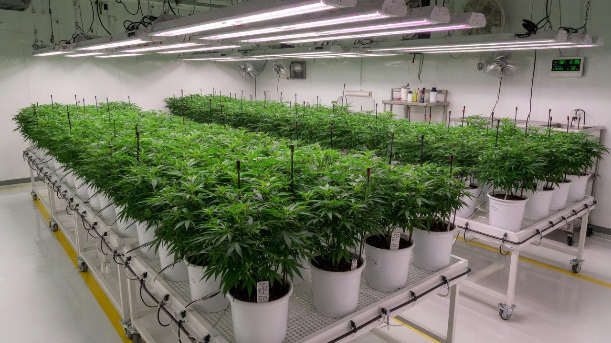
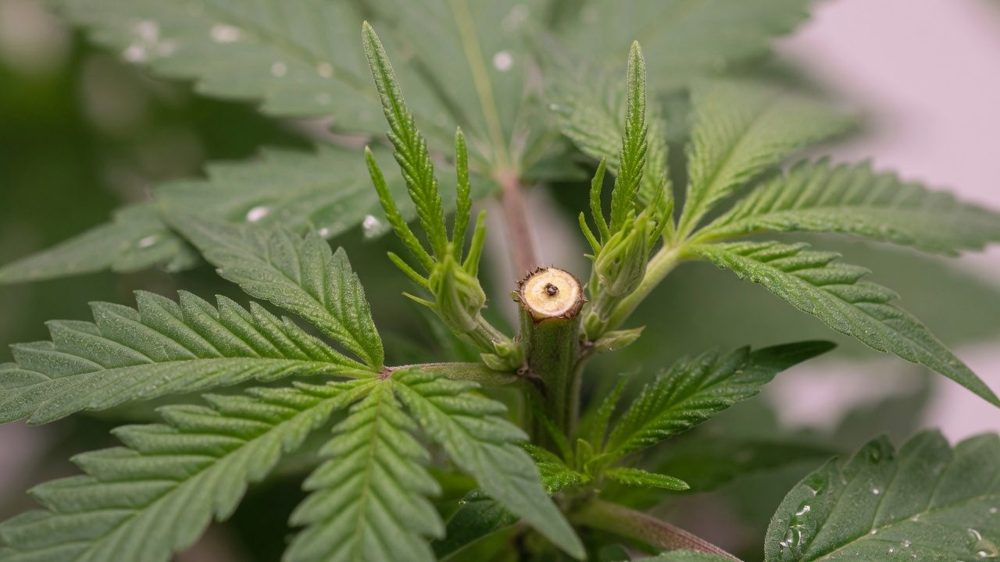
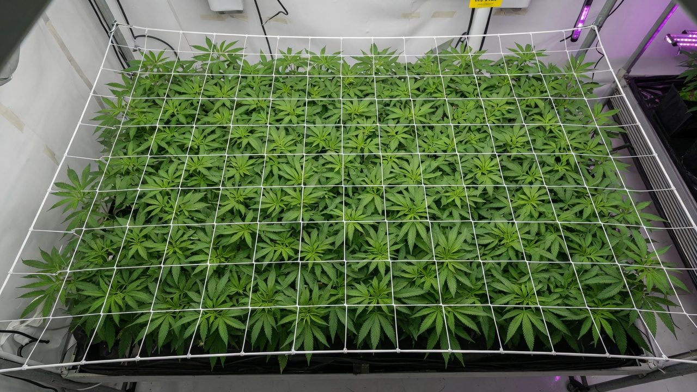
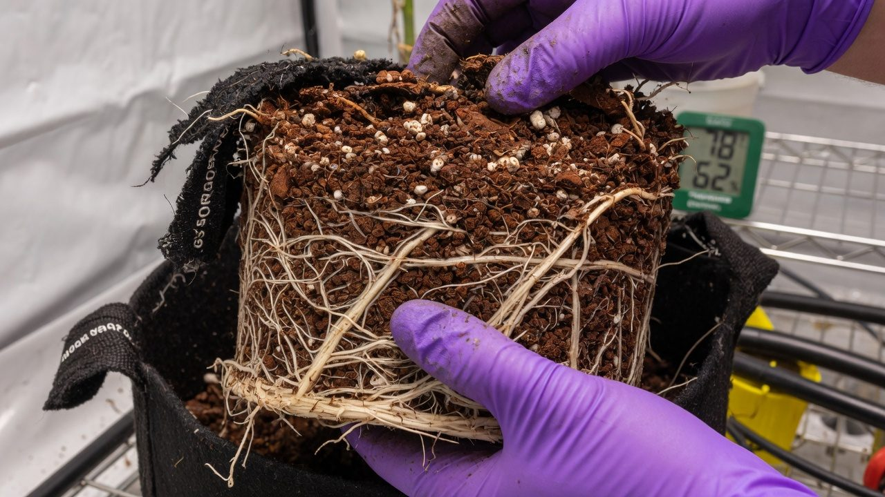

Vegetative management: build the frame, then flip
Veg is not the waiting room before the real grow. It is where plant count, pot size and canopy plan get converted into a number of days, and where almost every week-3-of-flower problem is either prevented or booked in.
Purpose and scope
By the time you flip to 12/12, most of what the harvest can be is already locked in: how many bud sites exist, how much leaf powers them, whether the canopy is level, and whether the roots can fund the stretch. Flower doesn't build any of that. Veg does. Flower just runs the machine that veg built.
Because veg feels uneventful (no buds, nothing to weigh) beginners treat it as a waiting room and operators treat it as a buffer. Both are expensive. Across published indoor trials, growers run veg anywhere from about 2 to 26 weeks, with a median around 30 days[1]. That spread isn't confusion. Different rooms genuinely need different veg lengths, and this paper is about calculating yours instead of guessing it.
The working logic: veg exists to build a frame (roots, stems, nodes and leaf) sized to the share of canopy each plant must fill. Plant count, pot size and target canopy fix the frame; the frame fixes the days. Everything else (stretch budgets, topping timing, environment, feed, root-zone gates) hangs off that.
Anyone who has ever flipped 'when it looked big enough', from a first tent to a licensed room. Pairs with defoliation & training (the how of cutting and bending) and light acclimation (the how of raising PPFD). This paper is the when and how long.
Definitions
Eight terms carry this whole guide. Skim them once; each comes back in context.
Evidence and limitations
We've gone to great lengths to keep these guides honest. One of the main ways we do that is self-review: we actively look for claims that are subjective, only lightly backed by literature, or based on grower practice rather than a controlled study — and we call those out instead of dressing them up as settled science.
Often there simply is no paper for the decision you're making. In those cases we're drawing on what other growers report and what has worked in our own rooms. That can still be useful — but it is not a lab proof. Do what works for your plants, your room, and your meters. If a table disagrees with your crop, believe the crop and log the difference.
- Core definitions and measurement units used in the paper
- Safety-critical limits where occupational or standards sources are cited
- Numeric stage targets (light, climate, feed) as starting bands, not laws
- SOPs that work in many rooms but need your genetics and meters
- Any single-number 'guaranteed' yield or potency claim without a multi-site trial
- Controller setpoints copied from another facility without re-calibration
See something glaringly wrong? Tell us and we'll fix it. Please open a GitHub issue with the paper name and what looks off (include a source if you have one): Report an accuracy issue. Local law, labels, and licences always override any recipe here. Inline notes labelled grain of salt flag the highest-risk over-trust points in the text.
Vegetative growth objectives
Flowering doesn't create structure. Buds form at nodes and branch tips that already exist when you flip, plus whatever the stretch adds in its first weeks. So the size of the frame at flip is a hard ceiling on what one plant can carry. This shows up cleanly in trial data: in a controlled study that varied veg length from 1 to 4 weeks, each extra week of veg added about 3.3 g of dry flower per plant, near-linearly[2].
Here is the twist that makes veg length a real decision instead of 'more is better': the room doesn't pay you per plant, it pays you per square metre. A full canopy of many small plants and a full canopy of a few big plants intercept roughly the same light. In trial data, packing plants tighter cuts yield per plant while yield per area holds or climbs[3], and across studies plant density is a poor predictor of yield per m²[4]. Meta-analysis of photoperiod-switch timing points the same way: at fixed area, short veg periods maximise floral output per unit time, because the canopy refills faster with more, smaller frames[1].
So veg length is not a lever you push for yield. It is the variable that balances the equation: however many plants you run, each must build a frame that fills its share of the canopy, no more, no less. Few plants, big shares, long veg. Many plants, small shares, short veg. Same canopy either way; what changes is turns per year, plant count overhead, and risk (more on that in the economics section).
Veg for exactly as long as it takes each plant to build its share of the canopy at or below the maximum flip height, then flip. Every day short of that is unfilled canopy in flower; every day past it is a lost fraction of a turn.

Vegetative duration: plant count, pot size, canopy and days
Work the chain in this order. Days come out the far end. They are never the input.
- 1Fix the plant countLicence condition, tag budget, risk appetite or plan, whatever binds first. This is usually the least negotiable number in the room.
- 2Measure the canopyBench or tray area you intend to fill wall-to-wall, in m². Divide by plant count: that is each plant's share. The frame it must build.
- 3Match the pot to the frameA root zone can only carry so much plant. Small shares run in 4-6 L; half-metre shares want 10-30 L; full-metre trees want 30 L+ or beds (next section for why).
- 4Pick the training that makes the shapeUntopped single colas for small shares; one topping round plus tie-downs for standard shares; staged topping rounds for trees. See defoliation & training.
- 5Veg until the gate, then flipFlip when the canopy is ~80-90% filled, level, and at or below your maximum flip height (stretch section), a state, not a date. The days this takes is your veg duration; write it down for next run.
| Archetype | Plants per m² | Pot / block | Typical veg | Training |
|---|---|---|---|---|
| Sea of green (SOG) | 10-20+ | 4-6 L | ~7-14 days | None, single colas |
| Topped standard | 2-4 | 10-30 L | ~14-28 days | Top once + tie-downs + net |
| Trees / count-capped | ~1 | 30 L+ or beds | 35+ days | Staged topping rounds + net |
One nuance from the meta-analysis worth knowing: floral biomass favoured short veg, but cannabinoid concentration peaked with longer veg (roughly 6-7 weeks) in the pooled data[1]. Treat that as a weak, cultivar-dependent signal, not a target. Potency is mostly genetics and flowering conditions. It mainly says: if you're forced into long veg by a plant-count cap, you are not obviously giving quality away.
Pot size and vegetative duration
Roots are the half of the frame you can't see, and they cap everything. A meta-analysis of 65 container studies found that, on average, doubling root-zone volume increased plant biomass by ~43%, and that cramped roots throttle growth mainly by cutting photosynthesis per unit leaf area, not just by limiting water[5]. A root-bound plant is a solar array running at part load: it looks leafy, it just quietly stops producing.
The practical consequence: every pot size buys a limited veg window before the plant outgrows it. Run past the window and you either transplant again (fine, if planned) or flip a root-bound plant (never fine). The windows below are working conventions, vigorous cultivars in warm rooms burn through them faster:
| Container | Comfortable veg window | Suits |
|---|---|---|
| 4-6 L pot / 4″ block | ~1-2 weeks | SOG single colas |
| 10-15 L pot / block on slab | ~2-4 weeks | Topped standard plants |
| 25-30 L pot | ~4-6 weeks | Large topped plants, small trees |
| 45 L+ / beds | 6+ weeks | Trees, mother-adjacent frames |
Stretch roughly doubles water and nutrient demand in three weeks, precisely when a root-bound pot can least supply it. The result is wilting between irrigations, early deficiency in week 2-3 of flower, and small, airy bud on a plant that looked fine at flip. If roots are circling and the pot dries in hours, pot up and give it a week before the flip, not after.
Planning flip height from ceiling clearance
The most common veg sin isn't vegging too short. It's flipping too tall. After the flip, most cultivars surge vertically for 1-3 weeks, with the stretch largely finished around day 21 of flower[7]. How much they stretch is strongly cultivar-dependent: compact indica-leaning plants might add ~50%, typical hybrids roughly double, and stretchy sativa-leaning cultivars can double or more[6][7]. Final height ≈ flip height × 1.5-2 for most plants you'll run. And you must budget for it before you flip, because you cannot un-stretch a plant into a fixed ceiling.
The arithmetic is three lines. Take the room height, subtract the fixture, its hang gap and the clearance the canopy needs below it (commonly ~60-90 cm all-in for LED, more for HPS), subtract pot-plus-bench height (~30 cm). What's left is usable plant height H. Divide H by your cultivar's stretch multiplier: that is your maximum flip height. Unknown cultivar? Assume ×2 — the industry default of 'flip at half your available height'[6].
| Cultivar type | Typical multiplier | Max flip height (H = 100 cm) |
|---|---|---|
| Compact / indica-leaning | ×1.5 | ≤65 cm |
| Typical hybrid | ×2.0 | ≤50 cm |
| Stretchy / sativa-leaning | ×2.5+ | ≤40 cm |
Tag one plant per cultivar. Measure height on flip day and again at day 21 of flower. Divide. That ratio, written on the strain card, converts next cycle's stretch from a gamble into a plan. After two runs you'll trust it more than any published range, and you should.

Topping and FIM: timing and node counts
Topping is the veg tool that turns one dominant tip into two even leaders and a wider, flatter frame. The full how-and-why lives in defoliation & training. What belongs in the timing paper is the schedule cost, because every cut spends veg days.
The working rule: top when the plant has 4-6 true nodes, typically 3-4 weeks into veg from a rooted clone or seedling, cutting above the 4th node (between the 4th and 5th), higher wastes the effect, lower removes too much plant and risks a stall[8]. Count nodes from the bottom, and never count the cotyledons (the first smooth round leaves). Expect 7-14 days of recovery before growth speed returns, and add that time to the veg plan explicitly[8].
FIM (cutting through the top ~¾ of the tip rather than below it) trades predictability for speed: 3-4 leaders instead of 2, less height lost, less even regrowth. Fine for tents and trees; most commercial rooms prefer the symmetry of a clean top.
- SOG: don't top at all. The whole point is one fast cola per plant.
- Topped standard: one round, at 4-6 nodes, done at least 10-14 days before the planned flip so recovery finishes in veg[8].
- Trees: staged rounds, top, let leaders recover, top the leaders. Each round adds roughly 1-2 weeks of veg; three rounds is a month-plus of structure time.
- Never top during the stretch: the plant is re-organising for flower and responds unevenly, and you've spent recovery time you no longer have.
Count backwards from flip day: flip minus 10-14 days is the last day for any major cut. Topping later than that means either postponing the flip (a real cost, decide it deliberately) or flipping mid-recovery with uneven leaders, which the stretch then amplifies into an uneven canopy for the whole flower run.

Canopy establishment in vegetative growth
Light height is a room-level setting: one fixture height serves every plant under it. That makes the tallest plant the dictator, raise the light to protect it and every shorter plant is suddenly under-lit; hold the light down and the tall plant bleaches and heat-stresses. An uneven canopy at flip locks in a PPFD spread of hundreds of µmol between neighbouring plants for the entire flower cycle.
Uniformity is also a commercial property, not just an agronomic one: denser, less uniform canopies measurably increase plant-to-plant and within-plant variability in cannabinoid content. Which is grade risk in any market that tests[3]. Levelling is done in veg with boring tools, in this order:
- Start level: one cultivar per light zone, clones from the same cohort (rooted within a few days of each other), graded by size at transplant. A 30%-undersized runt never catches up, cull it or bench it separately.
- Position: naturally taller plants to the edges and corners where PPFD falls off; short plants centre-stage under the hot spot.
- Tie down, don't cut down: from mid-veg, bend and tie the tall leaders sideways (low-stress training) so short neighbours close the gap, no recovery time spent.
- Net on before stretch: the trellis goes over the canopy in late veg or at flip while everything is short, then tops get tucked through the squares during weeks 1-3 of flower.
Nets installed in week 3 of flower (over sticky, branched, tangled plants) break branches and cost hours. The net's job is to receive the stretch as it happens. If it isn't on by flip day, it mostly isn't going on.
Vegetative climate targets
Veg wants a slightly warmer, wetter, gentler room than flower: the plant is all leaf, shallow-rooted early on, and building tissue rather than ripening it. The table gives working bands; the two figures below unpack the ones people argue about.
| Parameter | Early veg (fresh transplant) | Late veg (pre-flip) | Basis |
|---|---|---|---|
| Air temp, lights on | 25-28 °C | 25-30 °C | Cannabis leaf photosynthesis peaks around 25-30 °C[11][10] |
| Relative humidity | 65-75% | 55-65% | Review targets: ~75% for juveniles stepping down toward ~55-60%[10] |
| VPD | ~0.8 kPa | 1.0-1.3 kPa | Same review, expressed as vapour-pressure deficit[10] |
| PPFD | 300-600 µmol/m²/s, ramping | 600-900 µmol/m²/s | 21-day veg trial across 135-1430 µmol[9] |
| Photoperiod | 18/6 (convention) | 18/6 until flip day | Long days hold veg; cultivars can initiate flower at photoperiods up to ~14 h[12] |
| CO2 | Ambient (~400-600 ppm) is fine | 700-800+ ppm pays only with high PPFD | Photosynthesis rises with CO2 to at least ~750 ppm at high light[11] |
Light in veg steers shape, not just speed. In the 21-day trial above, higher PPFD made plants shorter, thicker-stemmed and shorter-internoded, roughly linearly; ~600 µmol produced a more open frame with better airflow, while ~900 µmol produced the compact, sturdy transplants commercial rooms want, with no light-stress signs even at the top of the tested range[9]. Low-light veg (150-300 µmol) is why home-grown plants arrive at flip lanky and floppy. Ramp intensity up over days, not in one jump. The ramp itself is covered in light acclimation.
Modern cultivars are not all '12 hours or nothing': in a ten-cultivar trial, every one initiated flowering at photoperiods up to 14 h[12]. A veg room drifting toward short days, a failing timer, a mis-set sunrise/sunset controller, a long power cut, can start flipping plants you meant to keep vegetative. Hold veg at 16-18 h and put the light schedule on your daily checks.
Vegetative nutrition
Veg tissue is protein and chlorophyll factory-work, and both are nitrogen-hungry, which is why every veg feed is 'N-forward' relative to bloom formulas. The dose-response work is unusually clean here: in fertigation trials on medical cannabis, vegetative growth peaked around 160 mg/L N, with 30 mg/L plants visibly starved and 320 mg/L plants going backwards[13]. More nitrogen is not more growth; it's a curve with a top.
In drain-to-waste coco or rockwool, the practical control knob is feed EC, ramped with plant size (hedged conventions, verified against runoff EC and leaf colour):
| Stage | Feed EC (mS/cm) | What you're doing |
|---|---|---|
| Fresh transplant, week 1 | ~1.5-1.8 | Gentle start while roots explore the new volume |
| Mid-veg | ~2.0-2.4 | Full N-forward feed; plant in full build mode |
| Last week of veg → flip | ~2.4-3.0 | Carry EC up so the plant enters stretch with reserves |
Two rules of thumb do most of the work. Colour before calendar: a veg plant should hold an even mid-green, pale, yellowing lower leaves mean the N supply is behind the build rate; near-black blue-green with clawed tips means it's ahead. Don't taper N before the flip: the stretch runs substantially on nitrogen mobilised from veg tissue, so a plant sent into 12/12 already pale will fade hard by week 3 of flower, from the bottom up.
Week-3 lower-leaf yellowing gets blamed on bloom nutrients constantly. The cause is usually two weeks earlier: an under-fed, root-limited or light-crushed plant that entered stretch with no nitrogen reserve. Fix it in veg, by flip day it is largely pre-paid.

Root-zone establishment before flowering
The fastest way to lose a week of veg is to drown a fresh transplant. A just-potted plant has a small root ball in a large, wet volume: keep that volume saturated and the roots have no reason to explore and no oxygen to do it with. Manufacturer stone-wool guidance for veg is small, frequent shots, on the order of ~3% of substrate volume, with a modest 5-15% runoff fraction, while avoiding hard drybacks (below roughly 25-30% water content in blocks) that stall young roots[14]. The rhythm is: wet enough to live, dry enough that roots keep chasing the water down and out.
By flip day the root zone, not the calendar, is the report card. Three checks: roots visible at the container walls and drain holes (or slab face); a predictable overnight dryback, the pot measurably lighter or the sensor showing a repeatable morning dip; and irrigation demand trending up day over day. That established, exploring root system is what funds the stretch, when water and nutrient demand roughly doubles in three weeks. Flip before it exists and the stretch stalls; flip long after and you're root-bound (section above).
- 1Roots at the wallsWhite roots at the pot walls/drain holes or wrapping the block face; daily water demand trending up.
- 2Height under the lineTallest top at or below max flip height (usable height ÷ stretch multiplier).
- 3Canopy level and fullTops within ~10 cm of each other; ~80-90% of each plant's canopy share filled; net on.
- 4Cuts recoveredLast topping ≥10-14 days ago; leaders even; no fresh major wounds going into stretch[8].
- 5Fed and greenNo active deficiency; feed at late-veg EC; plant an even mid-green with N reserves for the stretch.
All five, or you don't flip. You fix the failing one first. A flip delayed two days to finish root-in costs you two days. A flip forced past a failing gate costs you the weak version of the entire flower cycle.
Vegetative duration economics
Flower length is written in the genetics, call it 56-63 days and largely untouchable. Veg length is therefore the schedule lever you own, and it trades three currencies: turns per year plants per gram risk per plant.
Where plant count is capped, veg length is the lever you have left. If a licence condition, agreement or your own risk model limits how many plants you may run, yield per plant becomes the metric that matters, and per-plant yield scales with veg length and frame size[2]. Fewer, bigger plants also carry real operational discounts: fewer tags and records per gram in a track-and-trace regime, fewer transplants, fewer IPM scouting units, and lower plant-to-plant variability risk than a dense canopy[3]. The inverse holds where count is free and time is the constraint: short veg, high density, more turns[1].
Veg length also has to fit your veg room. At steady state, a flower room flipping a new cohort every N weeks needs the veg area to hold each cohort for the full veg length. The longer the veg, the more cohorts stack up on the veg benches at once, long-veg strategies quietly demand a bigger veg room, more veg light, and more weeks of exposure to a veg-room pest outbreak. Cheap per m², but not free.
Free plant count → sell time: short veg, high density, maximum turns. Capped plant count → sell frame: long veg, big pots, trees. The worst position is the unexamined middle, medium plants, medium density, chosen by habit, optimising nothing.
Common vegetative-growth mistakes
Every one of these is cheap to prevent in veg and expensive to discover in flower. Most rooms that struggle in week 3 of flower committed one of them a month earlier.
Pot dries out by lunchtime, roots circling the walls, growth stalled, and it gets flipped anyway. Stretch demand lands on a root system that can't fund it: wilting, early fade, airy bud. Fix: match pot to planned veg days; if in doubt, pot up and add a week before flip.
Stretch outruns the ceiling; tops grow into the fixture, bleach and cook, and dimming to save them starves the rest of the room. Fix: max flip height = usable height ÷ stretch multiplier, enforced on flip day, no exceptions.
One tall cultivar or a few over-vegged plants pin the light high while the rest under-run for nine weeks. Fix: level in veg, graded clones, tall plants tied down and benched to the edges, runts culled, net on at flip.
A cut ten days before flip means flipping mid-recovery: uneven leaders that the stretch amplifies into a lopsided canopy. Fix: last major cut 10-14 days before flip, on the calendar the day you top.
Big new pot kept saturated 'to help it settle in': oxygen-starved roots, no exploration, fungus gnats, a stalled week. Fix: small frequent shots, modest runoff, let the roots chase moisture into the new volume.
'One more week' by vibes, no canopy spec, no gate. Every unplanned week is a lost fraction of a turn, the most expensive habit in the room. Fix: write count × share × max height before transplant; flip on the gate.
Troubleshooting
Veg problems telegraph themselves early if you read the plant against the plan. The common ones:
| Symptom | Likely cause | What to do |
|---|---|---|
| Transplant sits still for a week+ | Over-wet root-in; roots not exploring | Cut shot sizes, let the volume breathe between shots; check drainage[14] |
| Long internodes, floppy stems | PPFD too low for the frame you want | Raise veg light in steps toward ~600-900 µmol[9]; add airflow for stem strength |
| Even pale green, lower leaves first | Nitrogen supply behind growth rate | Lift feed EC / N toward the veg optimum[13]; recheck in 4-5 days |
| Dark blue-green, clawed tips | Nitrogen ahead of growth rate | Ease feed EC back; hold N-forward ratio but lower the dose |
| Pistils/flowers forming in the veg room | Photoperiod fault, timer, controller or light leak into a ≤14 h day | Audit the schedule and door discipline[12]; single calyxes at nodes (preflowers) are normal maturity, full flowering is not |
| One plant towers over the cohort | Cultivar mix under one light, or clone-age spread | Tie it down and bench it to the edge now; next run, cohort by cultivar and rooting date |
| Pot needs water 3× a day | Root-bound, the container clock ran out | Pot up and give it a week, or flip today if all other gates pass; never 'push through' a root-bound stretch[5] |
Veg is a countdown to a canopy spec, not a waiting room. The spec is written before transplant: N plants × each filling its share of the canopy × at or under max flip height, level, rooted to the walls, green. Every veg day either moves the room toward that spec or it's rent. When the spec is met, flip. That day, not Saturday.
From here: the cutting-and-bending toolkit lives in defoliation & training, and the safe way to carry PPFD from clone light to a 900-µmol veg canopy is in light acclimation.
References
- Dang M, Arachchige NM, Campbell LG (2022). Optimizing photoperiod switch to maximize floral biomass and cannabinoid yield in Cannabis sativa L.: a meta-analytic quantile regression approach. Frontiers in Plant Science 12:797425. (Vegetative durations across 26 studies spanned 13-180 days, median 30; floral biomass favoured short vegetative periods while cannabinoid concentration peaked with longer ones.) https://www.frontiersin.org/articles/10.3389/fpls.2021.797425/full
- Schober T, Präger A, Hartung J, Graeff-Hönninger S (2024). The effects of plant density and duration of vegetative growth phase on agronomic traits of medicinal cannabis (Cannabis sativa L.): a regression analysis. PLoS ONE 19(12):e0315951. (Per-plant inflorescence yield rose ~3.3 g per extra week of veg across 1-4 weeks; higher density cut yield per plant while area yields held or rose.) https://journals.plos.org/plosone/article?id=10.1371/journal.pone.0315951
- Danziger N, Bernstein N. Too Dense or Not Too Dense: Higher Planting Density Reduces Cannabinoid Uniformity but Increases Yield/Area in Drug-Type Medical Cannabis. Frontiers in Plant Science. 2022;13:713481. doi:10.3389/fpls.2022.713481 https://doi.org/10.3389/fpls.2022.713481
- Backer R, Schwinghamer T, Rosenbaum P, McCarty V, Eichhorn Bilodeau S, Lyu D, Ahmed MB, Robinson G, Lefsrud M, Wilkins O, Smith DL (2019). Closing the yield gap for cannabis: a meta-analysis of factors determining cannabis yield. Frontiers in Plant Science 10:495. (Plant density reduced yield per plant but was not an effective predictor of yield per square metre.) https://pmc.ncbi.nlm.nih.gov/articles/PMC6491815/
- Poorter H, Bühler J, van Dusschoten D, Climent J, Postma JA (2012). Pot size matters: a meta-analysis of the effects of rooting volume on plant growth. Functional Plant Biology 39(11):839-850. (Across 65 studies, doubling pot size increased biomass ~43% on average; small pots throttle growth mainly via reduced photosynthesis per unit leaf area.) https://www.publish.csiro.au/fp/fp12049
- Nebula Haze. How to prepare for the flowering stretch (flip at roughly half your available final height; stretch magnitude varies strongly by strain). GrowWeedEasy, industry cultivation guide. (industry/manufacturer or non-journal source) https://www.growweedeasy.com/flowering-stretch
- I Love Growing Marijuana (ILGM). Stretching cannabis plants: what it is and why it matters (stretch largely complete around day 21 of flower; some plants double or triple in height; sativa-leaning cultivars stretch more). Industry cultivation guide. (industry/manufacturer or non-journal source) https://ilgm.com/resources/guides/stretching-cannabis-plants
- Royal Queen Seeds. Topped vs non-topped cannabis plants — is topping worth it? (Top at 4-6 nodes, ~3-4 weeks into veg, cutting between the 4th and 5th node; allow 7-14 days of recovery and extend veg accordingly.) Industry cultivation guide. (industry/manufacturer or non-journal source) https://www.royalqueenseeds.com/us/blog-topped-vs-non-topped-cannabis-plants-is-topping-worth-it-n1532
- Moher, M., Llewellyn, D., Jones, M., & Zheng, Y. (2022). Light intensity can be used to modify the growth and morphological characteristics of cannabis during the vegetative stage of indoor production. Industrial Crops and Products, 183, 114909. https://doi.org/10.1016/j.indcrop.2022.114909 https://www.sciencedirect.com/science/article/abs/pii/S0926669022003922
- Jin D, Jin S, Chen J (2019). Cannabis indoor growing conditions, management practices, and post-harvest treatment: a review. American Journal of Plant Sciences 10(6):925-946. (Optimum growth ~25-30 °C; RH ~75% for juveniles stepping down to ~55-60% through veg and flower, i.e. VPD ~0.8 rising to ~1.3-1.4 kPa.) https://www.scirp.org/journal/paperinformation?paperid=93052
- Chandra S, Lata H, Khan IA, ElSohly MA (2008). Photosynthetic response of Cannabis sativa L. to variations in photosynthetic photon flux densities, temperature and CO2 conditions. Physiol. Mol. Biol. Plants 14(4):299-306. https://pmc.ncbi.nlm.nih.gov/articles/PMC3550641/
- Moher M, Llewellyn D, Jones M, Zheng Y (2023). Is twelve hours really the optimum photoperiod for promoting flowering in indoor-grown cultivars of Cannabis sativa? Plants 12(14):2605. https://doi.org/10.3390/plants12142605
- Saloner, A., & Bernstein, N. (2020). Response of Medical Cannabis (Cannabis sativa L.) to Nitrogen Supply Under Long Photoperiod. Frontiers in Plant Science, 11, 572293. https://doi.org/10.3389/fpls.2020.572293 https://www.frontiersin.org/journals/plant-science/articles/10.3389/fpls.2020.572293/full
- Grodan. Grow Guide, Cannabis Edition — Chapter 3: introduction to crop steering (vegetative-phase irrigation as small frequent shots ~3% of substrate volume, 5-15% runoff fraction, avoiding drybacks below ~25-30% WC in blocks after transplant). Manufacturer technical guide. (industry/manufacturer or non-journal source) https://www.grodan101.com/syssiteassets/downloads/grow-guide/chapter-3---introduction-to-crop-steering.pdf
Citations marked in-text as [n] map to this list. Primary literature and official guidance except where noted. Cannabis tissue culture is strongly genotype-dependent, verify dilutions, hormone doses and local regulations against the primary sources before relying on them.